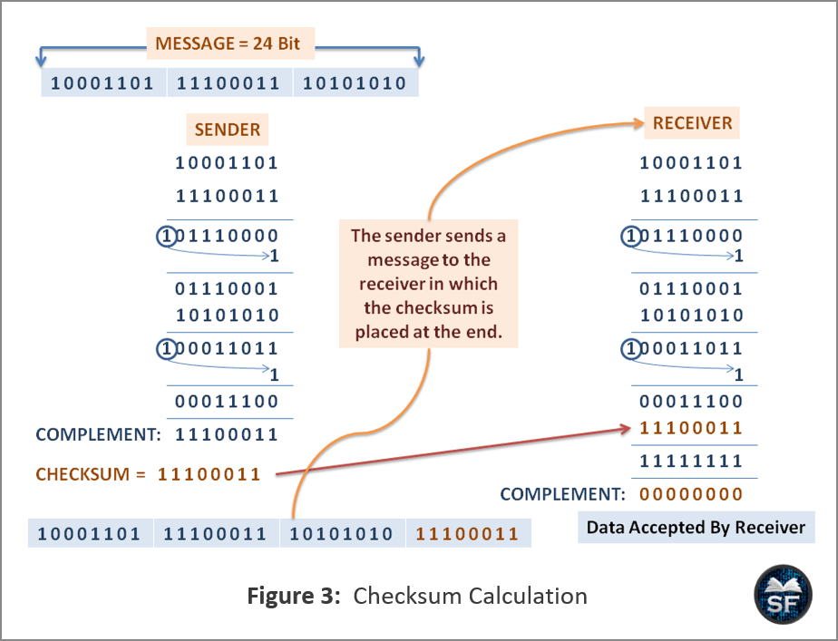
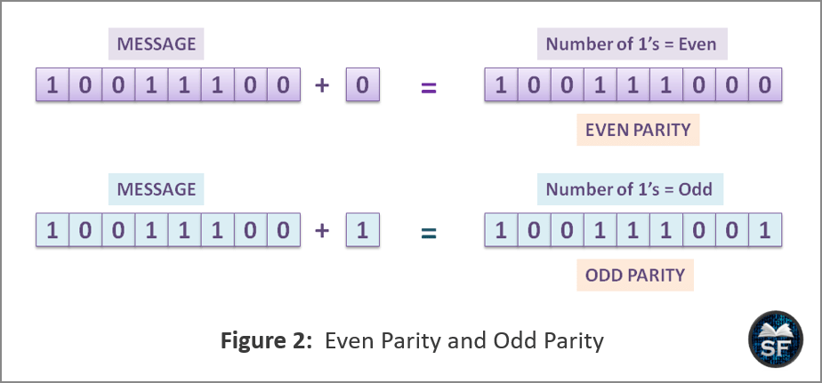
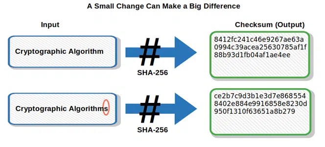
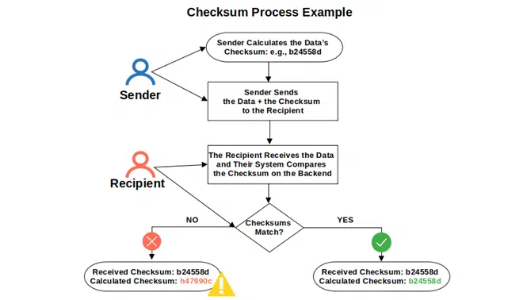

System Design Mastery
Master scalable systems with premium insights
🔐 Checksum: Data Integrity Guardian
1️⃣ What is it?
A Checksum is a small numerical value calculated from a block of data to verify if the data has changed.
Process:
- 🔢 Calculate checksum from original data
- 📤 Transmit data + checksum
- 🔍 Recalculate checksum on received data
- ✅ Compare checksums to detect corruption

📊 How checksum detects data corruption during transmission
2️⃣ Why Does It Exist? (What Problem Does It Solve?)
Checksum exists to solve data integrity problems. It helps answer:
"Did this data change or get corrupted?"
- 🌐 Data corruption during transmission
- 💾 Bit flips in storage
- 🔄 Corruption during replication
🚨 Limitation of Parity Bit:
- ➕ Adds 1 extra bit
- 🔍 Detects only single-bit errors
- ❌ Fails for many multi-bit (burst) errors
Example: If 2 bits flip → parity might still look correct ❌
👉 So we needed something stronger → Checksum

📊 Parity bit fails to detect multi-bit errors
3️⃣ What Breaks Without It?
Without checksum:
- 🔴 Corrupted data goes unnoticed
- 📁 File downloads may be damaged
- 🗄️ Database replication errors undetected
📌 Example:
Download a file → 1 bit changes → file becomes unusable.
5️⃣ When to Use / When NOT to Use
✅ When to Use Checksum:
- 🌐 Network data transfer
- 📁 File downloads
- ☁️ Distributed storage
- 🗄️ Database replication
- 💾 Backup verification
❌ When NOT to Use:
- 📝 Small temporary data
- 📊 Non-critical logs
- 💻 Internal memory operations (low risk)
Examples:
- 📤 File upload/download
- 🌐 Distributed systems
- 💾 Block storage systems
6️⃣ One Common Mistake
🚨 Confusing checksum with encryption
- ✅ Checksum detects accidental errors
- ❌ It does NOT protect against malicious tampering
Checksum ≠ Security
For security:
- 🔐 Use cryptographic hash (SHA-256)
- 📝 Use digital signatures
Important Property
Small change in input data
→ Big change in checksum
This helps detect errors easily.

📊 Small input change creates completely different checksum
7️⃣ Real App Connection
🌐 File Downloads
- ✅ Software downloads include checksum
- ✅ You verify after download
☁️ Distributed Storage
- ✅ Systems like HDFS use checksums
- ✅ Detect corrupted blocks

📊 How Checksum Process works
8️⃣ Why Not Rely Only on Checksum?
Because:
- 🔍 It only detects accidental errors
- 🚫 Does not prevent corruption
- 🔐 Does not provide authentication
- ⚠️ Weak checksum can have collisions
👉 For security, use cryptographic hashing.
🧠 Types of Checksums
🔹 Simple Checksum
Sum of bytes
🔹 CRC (Cyclic Redundancy Check)
Used in networking
🔹 Cryptographic Hash
MD5, SHA-256 (stronger integrity)
Checksum vs Hash
Both look similar but purpose differs.
Checksum
- 🔍 Error detection
- ⚡ Simple
- 🌐 Used in networking
Cryptographic Hash
- 🔐 Security
- ⚙️ Complex
- 🔑 Used in passwords
Example: CRC → checksum | SHA-256 → cryptographic hash
🎯 Summary
A checksum is a computed value used to detect accidental data corruption during transmission or storage.
Checksum = Data integrity checker
Remember Checksum:
✅ Detects errors
❌ Does NOT correct errors
⚠️ Not 100% perfect (rare collisions possible)
💡 Pro Tip
Use CRC32 for fast error detection in networking and file transfers. For security-critical applications, always use cryptographic hashes like SHA-256 instead of simple checksums.
Common implementations: TCP/IP (CRC), Ethernet (CRC), Git (SHA-1), Bitcoin (SHA-256).